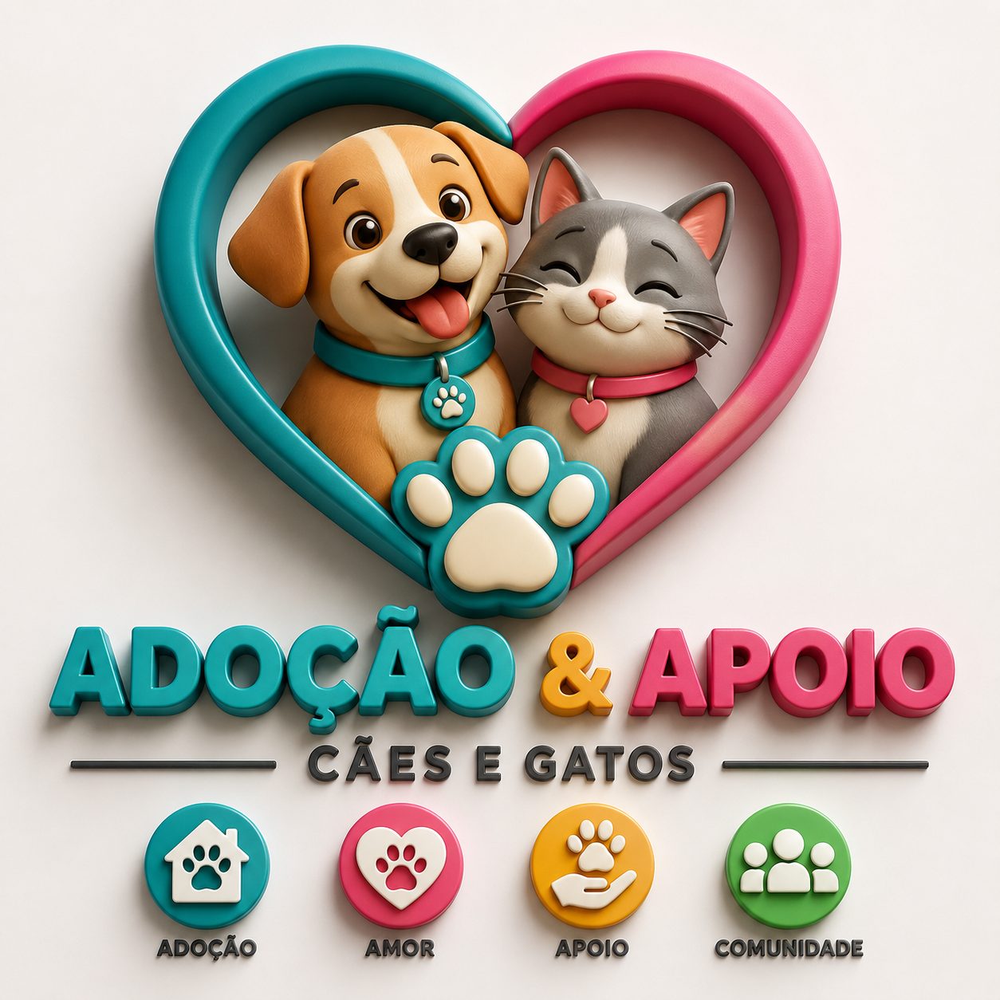
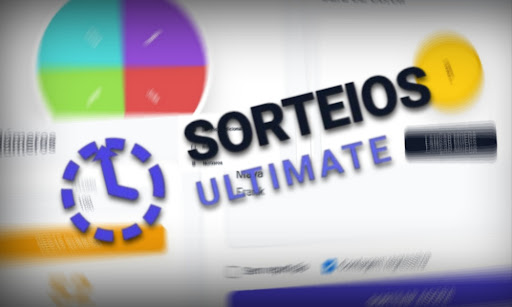
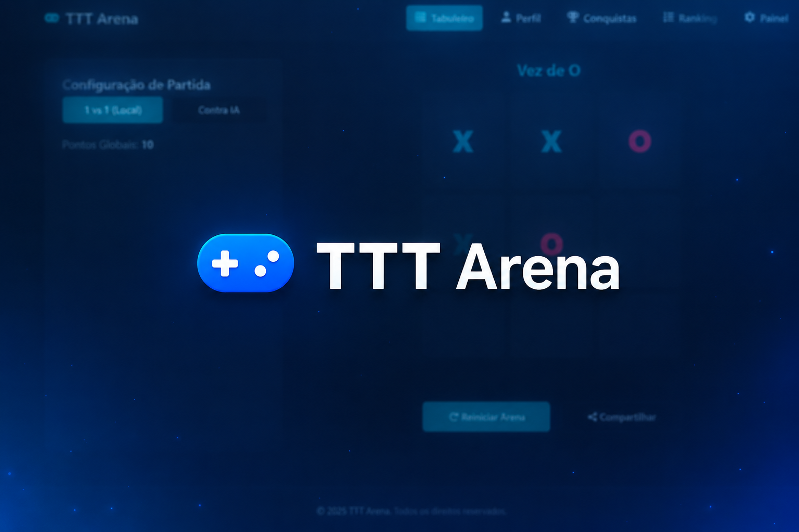
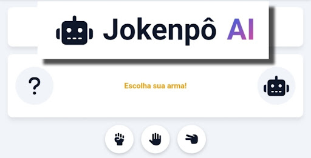
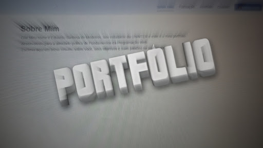

Meus Projetos
Confira abaixo alguns dos trabalhos e aplicações que desenvolvi.

App de Adoção de Animais
Aplicativo focado em conectar protetores e adotantes de cães e gatos, facilitando o processo de adoção responsável.
Mobile / Web
Site de Sorteios
Plataforma para gerenciamento e realização de sorteios online de forma automatizada e transparente com logo personalizada.
HTML
Jogo da Velha
O clássico jogo adaptado para a web com interface interativa, contador de pontos e inteligência para detectar vitória ou empate.
JavaScript
Jogo Jokenpô
Jogo de Pedra, Papel e Tesoura onde o usuário joga contra o computador, contendo animações e lógica de pontuação dinâmica.
JavaScript
Este Portfólio Web
Criação desta interface responsiva utilizando conceitos de Mobile First, alternador dinâmico de tema (claro/escuro) e JavaScript puro.
HTML5 / CSS3 / JS